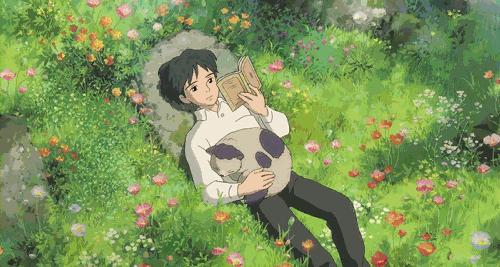

ช่วงเวลาเงียบ ๆ สำหรับอ่านและทบทวนความคิดหนังสือที่พาไปสำรวจความคิด
ผมชอบอ่านหนังสือแนวพัฒนาตัวเองควบคู่กับวรรณกรรมคลาสสิก การอ่านช่วยให้ได้ทบทวนความคิด ทำความเข้าใจผู้คนและชีวิตจากหลายมุมมอง
นักเขียนคนโปรด: Fyodor Dostoevsky ผู้ทำให้ผมสนใจความซับซ้อนของมนุษย์และคำถามที่ชวนคิดต่อ
หนังสือเล่มโปรด: เจ้าชายน้อย เรื่องราวเรียบง่ายที่ชวนมองความสัมพันธ์และสิ่งสำคัญในชีวิตด้วยสายตาที่อ่อนโยน